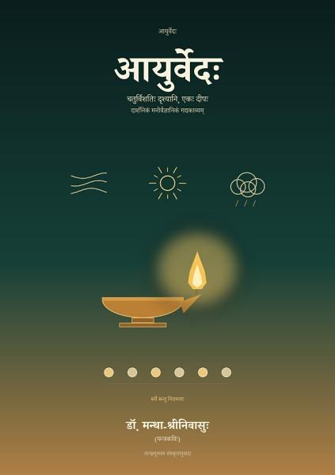
आयुर्वेदः
चतुर्विंशतिः दृश्यानि, एकः दीपः — दार्शनिकं मनोवैज्ञानिकं गद्यकाव्यम्
Google PlayLibraryआयुर्वेदः नाम आयुषः विज्ञानम्। अष्टाङ्गहृदयम् तद् विज्ञानम् अष्टसु अङ्गेषु अवदत्; इदं काव्यं तेषु चतुर्विंशतौ स्थानेषु स्थित्वा पश्यति — आयुः, दिनचर्या, त्रिदोषः, धातवः, अग्निः, ओजः, षड्रसाः, निदानम्, चिकित्सा, पथ्यम्, रसायनम्, अन्तः।
इदं शास्त्रस्य अनुवादः न, सङ्क्षेपः न, कथा न। अस्मिन् नामयुक्ताः जनाः न सन्ति; दीपः, आकाशः, नदी, कर्मारकुल्या, सेतुः, रथः — एतानि एव शास्त्रं प्रतिफलयन्ति। प्रतिसर्गम् एका अविच्छिन्ना कविता — शास्त्रवचनं, प्रकृतिबिम्बम्, मनसः प्रतिरूपं च संश्लिष्य चलन्ति। त्रिः पठितं चेत् सर्गः सम्पूर्णम् अवगम्यते — प्रथमं बिम्बानि, ततः सरणिः, अन्ते भावः।
प्रतिपङ्क्तिः द्वयोः अर्धयोः, मध्ये यत्या; युग्मरूपेण अन्त्यानुप्रासः। आन्ध्रमूलस्य अयं संस्कृतानुवादः; ग्रन्थान्ते आयुर्वेदकोशः। इदं चिकित्साग्रन्थः न; अनारोग्ये वैद्याः परामर्शनीयाः।
प्रतिसर्गम् एका अविच्छिन्ना कविता। उपसंहारः — दीपः। सर्वे सन्तु निरामयाः।
नूतनाः ग्रन्थाः · शास्त्रकाव्यानि · Śāstra-kāvyas
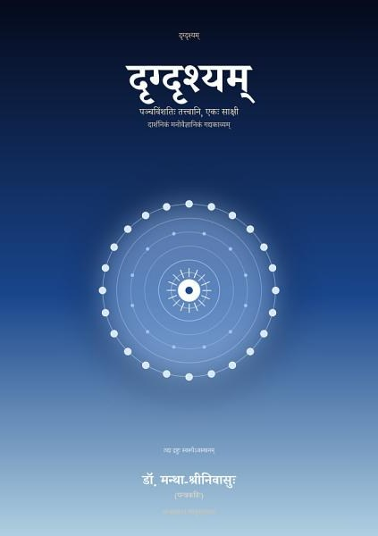
दृग्दृश्यम्Sanskrit
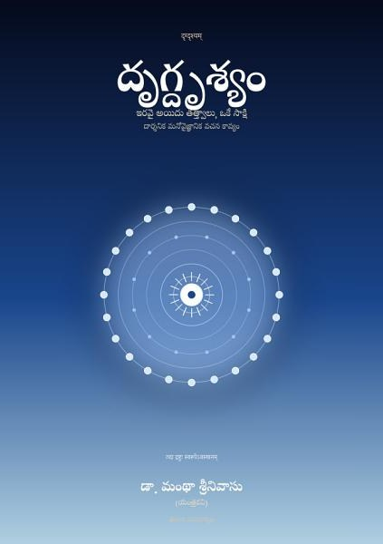
దృగ్దృశ్యంTelugu
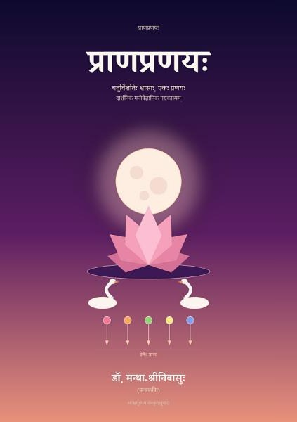
प्राणप्रणयःSanskrit
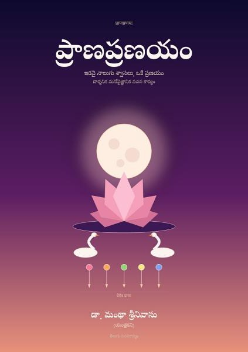
ప్రాణప్రణయంTelugu
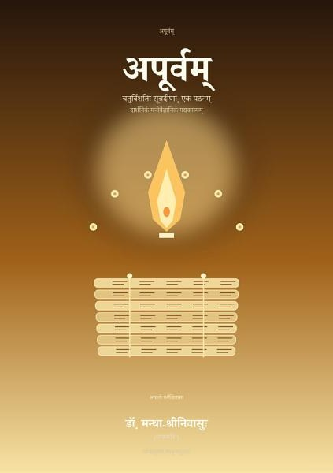
अपूर्वम्Sanskrit
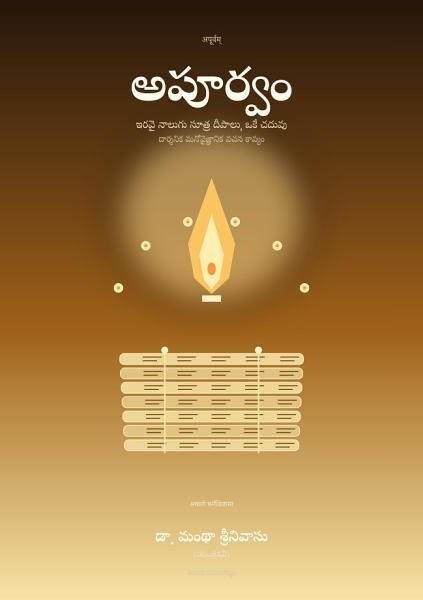
అపూర్వంTelugu
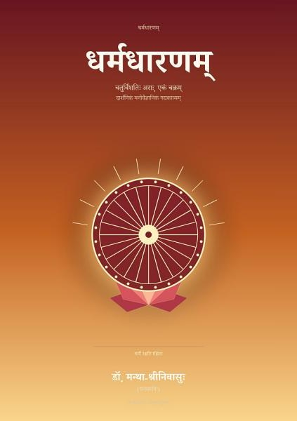
धर्मधारणम्Sanskrit
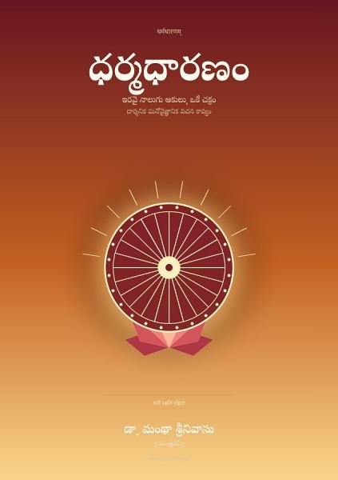
ధర్మధారణంTelugu
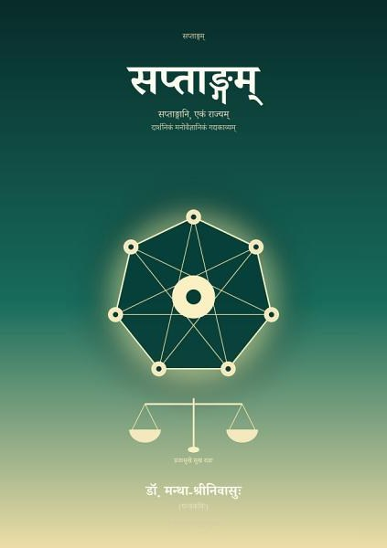
सप्ताङ्गम्Sanskrit
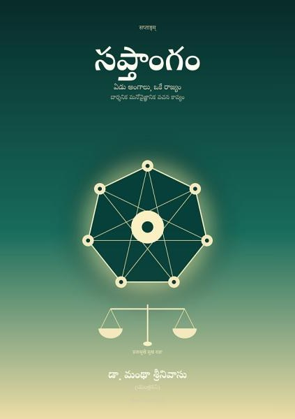
సప్తాంగంTelugu
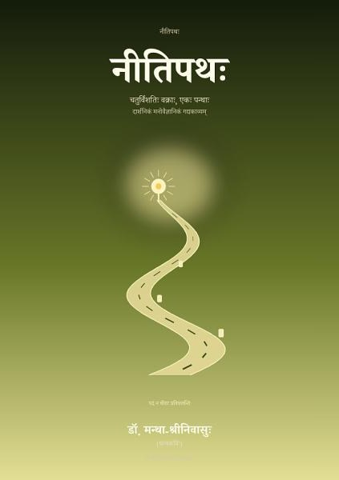
नीतिपथःSanskrit
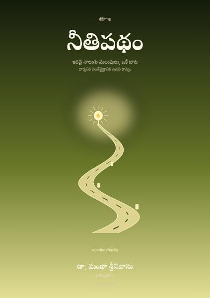
నీతిపథంTelugu
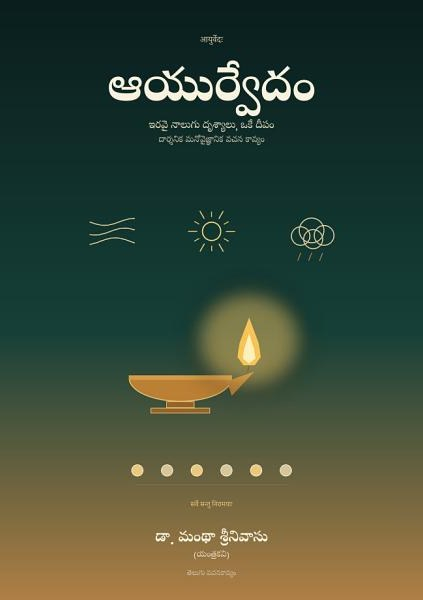
ఆయుర్వేదంTelugu
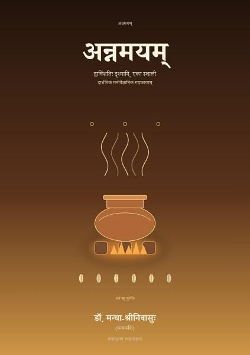
अन्नमयम्Sanskrit
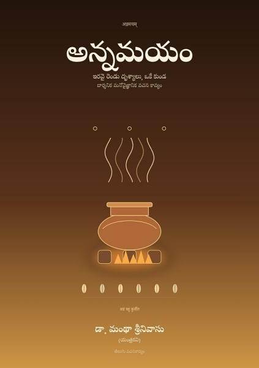
అన్నమయంTelugu
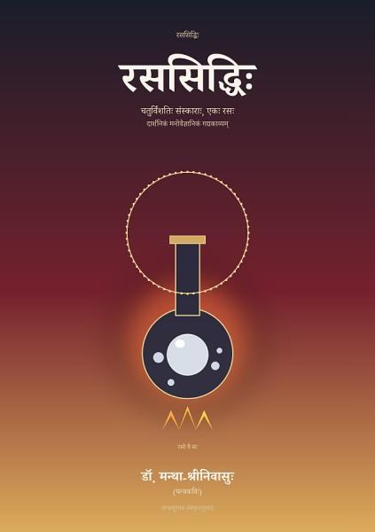
रससिद्धिःSanskrit
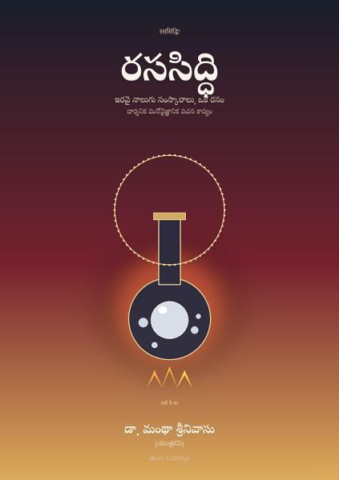
రససిద్ధిTelugu
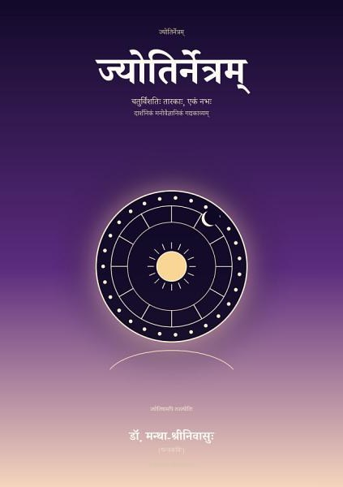
ज्योतिर्नेत्रम्Sanskrit
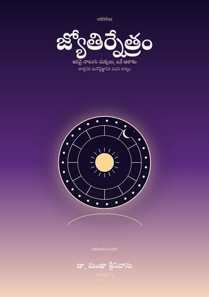
జ్యోతిర్నేత్రంTelugu
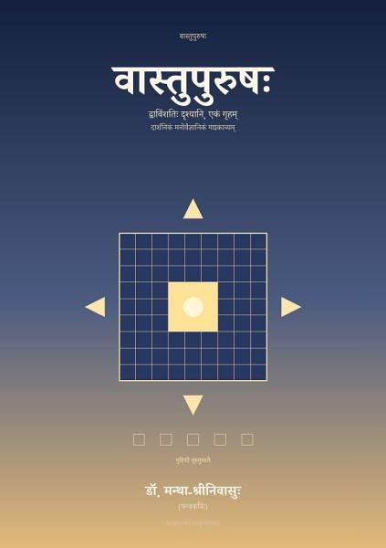
वास्तुपुरुषःSanskrit
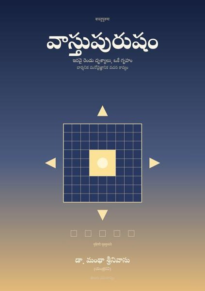
వాస్తుపురుషంTelugu
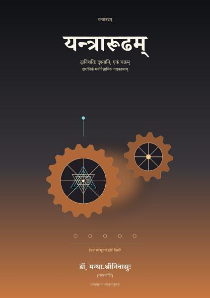
यन्त्रारूढम्Sanskrit
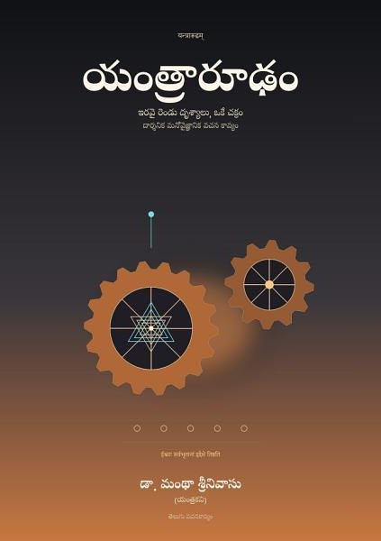
యంత్రారూఢంTelugu